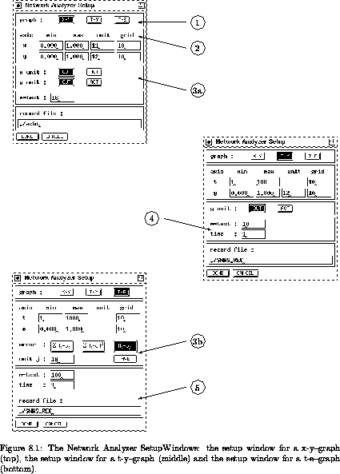
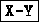
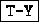
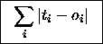
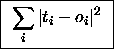
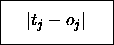

The setup window can be opened by pressing the SETUP button on
the right side of the network analyzer window.
The shape of the setup window depends on the type of graph to display
(see fig.  ).
).

The setup window consists of five parts (see fig.  ):
):
x
\
To select the type of graph (see table  ) to be displayed,
press the corresponding button
) to be displayed,
press the corresponding button

,
or .
x
\
The second part of the setup window is used to specify some attributes about the axes. The first line contains the values for the axes in horizontal direction, the second line these for the vertical axes. The columns min and max define the area to be displayed. The numbers of the units, whose activation or output values should be drawn have to be specified in the column unit. The last column grid the number of columns and rows of the grid can be varied. The labeling of the axes is dependent on these values, too.
x
\
The selection between showing the activation or the output of a unit along the x-- or y--axes can be made here. To draw the output of a unit click on and to draw the activation of a unit click on .
x
\
Different types of error curves can be drawn:
x

\
For each output unit the difference between the generated output and
the teaching output is computed. The error is computed as the sum of
the absolute values of the differences. If  is toggled,
the result is divided by the number of output units, giving the
average error per output unit.
is toggled,
the result is divided by the number of output units, giving the
average error per output unit.
\
x

\The error is computed as above, but the square of the differences is taken instead of the absolute values. With the mean squared deviation is computed.
\
x

\Here the deviation of only a single output unit is processed. The number of the unit is specified as unit j.
x
\
m-test:
\
Specifies the number of TEST operations, which have to be executed when clicking on button.
time:
\
Sets the time counter to the given value.
x
\
The name of the file, in which the visualized data can be saved by activating the button, can be specified here. The filename will be automatically extended by the suffix '.rec'. To change the filename, the button must not be activated.
When the setup is left by clicking on all the changes
made in the setup are lost. When leaving the setup by pressing the
 button, the changes will be accepted if no errors
could be detected.
button, the changes will be accepted if no errors
could be detected.